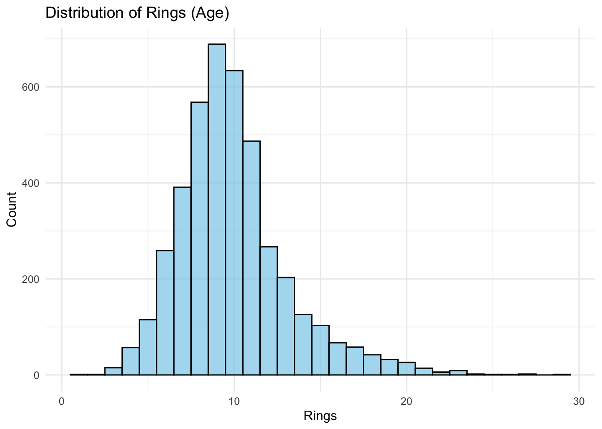
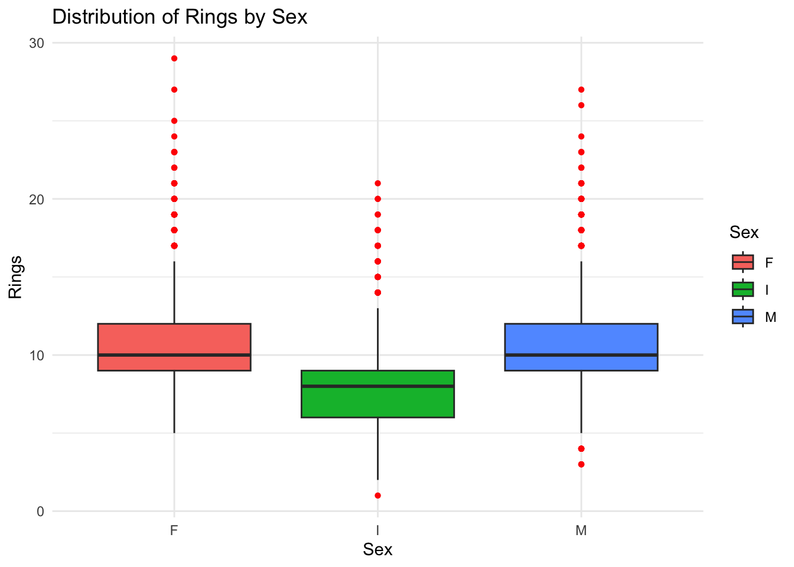

The Abalone data set provides a fascinating opportunity to predict the age of abalone from physical measurements (Nash et al. 1995).
Data Overview
The data set consists of several variables, with the target variable being “Rings,” which indicates the abalone’s age. The independent variables include both physical measurements and the sex of the abalone, as detailed below:
Sex: Categorical variable indicating male, female, or infant
Length: Continuous variable measured in millimeters
Diameter: Continuous variable measured in millimeters
Height: Continuous variable measured in millimeters
Whole weight: Total weight of the abalone in grams
Shucked weight: Weight of the meat in grams
Viscera weight: Gut weight after bleeding in grams
Shell weight: Weight of the dried shell in grams
Upon importing the data, the column names were renamed to enhance readability and facilitate easier analysis. Below is a snapshot of the abalone data set:
The analysis began with examining the distribution of the “Rings” variable to understand the age distribution within the data set.
Code
ggplot(abalone, aes(x = Rings)) +geom_histogram(binwidth =1, fill ="skyblue", color ="black", alpha =0.7) +theme_minimal() +labs(title ="Distribution of Rings (Age)", x ="Rings", y ="Count")

The relationship between the “Sex” variable and “Rings” was explored to determine if there were any noticeable differences in age distribution among the different sex categories.
Code
ggplot(abalone, aes(x = Sex, y = Rings)) +geom_boxplot(aes(fill = Sex), outlier.color ="red", outlier.shape =16) +theme_minimal() +labs(title ="Distribution of Rings by Sex", x ="Sex", y ="Rings")

A series of scatter plots were created to analyze the relationships between the continuous variables (Length, Diameter, Height, Whole_weight, Shucked_weight, Viscera_weight, Shell_weight) and the “Rings” variable. This was aimed at identifying any potential correlations between the physical measurements of the abalones and their age.
The exploratory data analysis revealed that continuous variables, such as the physical measurements of abalones, play a significant role in predicting the age. Additionally, preliminary findings suggest a potential relationship between the sex of the abalone and its age, indicating that different growth patterns may exist among the sexes.
Conclusion
This exploratory data analysis of the Abalone data set highlights the critical role of data visualization and statistical analysis in uncovering patterns and insights within complex data sets. The methodology and findings presented here demonstrate a rigorous approach to data analysis, emphasizing the importance of cleanliness, accuracy, and thorough exploration of data.
References
Nash, Warwick, Tracy Sellers, Simon Talbot, Andrew Cawthorn, and Wes Ford. 1995. “Abalone.” UCI Machine Learning Repository.